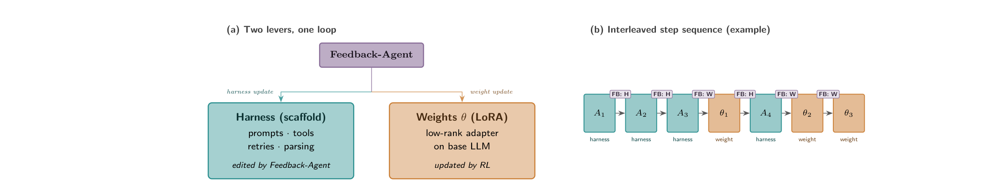
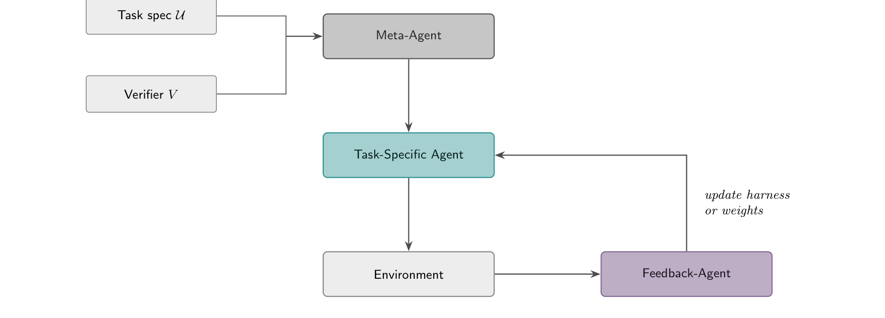
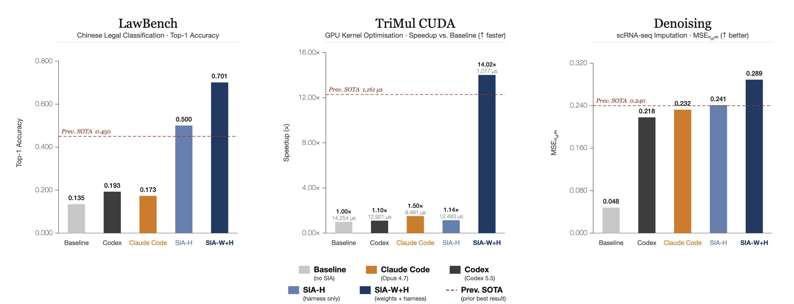

SIA：让一个 Feedback-Agent 同时更新 harness 与模型权重的自我改进闭环
SIA: Self Improving AI with Harness & Weight Updates
hexo-ai/sia）。
①开源贡献 Open-source Artifacts
SIA 主要以一个开源框架的形式释出（MIT 协议），核实于 github.com/hexo-ai/sia：装好后用一行 sia --task ... --max_gen ... 就能在自带的 benchmark 上跑「Meta-Agent 初始化 → Task-Agent 执行 → Feedback-Agent 改 harness 或权重」的完整循环。注意 SIA 的产物是每个任务在 test-time 现训出来的 LoRA + 演化后的 scaffold，因此没有发布通用的预训练权重或新数据集——权重是跑 SIA 时按任务现场产生的，而非可下载的成品。
| 类型 | 是否开源 | 内容 / 链接 |
|---|---|---|
| 代码 Code | ✔ | github.com/hexo-ai/sia · MIT 协议 · pip install 'sia-agent[claude]' 或 [openhands]。含 Meta/Target/Feedback 三类 agent、harness 系统（public/private 数据切分）、参考 agent 模板，以及两套后端（Claude Agent SDK、OpenHands 多供应商）。 |
| 模型权重 Weights | ✘ | 不发布成品权重。基座为 openai/gpt-oss-120b，SIA 在 test-time 用 LoRA（rank 32）现场适配；产出的 adapter 落在 runs/run_{id}/gen_{n}/，随任务生成。 |
| 数据集 Dataset | ✘ | 未发布新数据集；复用已有公开 benchmark（LawBench、AlphaEvolve TriMul、MAGIC / Baron pancreas scRNA-seq）。仓库内置 gpqa、lawbench、longcot-chess、spaceship-titanic 等任务，并接入 MLE-Bench。 |
| 环境 / Benchmark | ✔ | task harness（含 grader / verifier、public/private split）随仓库开源；可按文档自行 prepare 新任务。 |
| 项目主页 / Demo | ✘ | 无独立 demo 站点，以 GitHub README 为准。仓库与多家媒体宣称 SIA「在 OpenAI MLE-Bench Hard 上排名 #1」——此为仓库/通稿口径，不在本论文报告范围内。 |
②研究动机与贡献 Motivation & Contribution
背景与问题：人，是 AI 自我改进的瓶颈
作者的开场判断很直接：今天 AI 的进步速率被人卡住了。模型由研究者设计与后训练，模型外面那层 agent 又是工程师手写 prompt、调 scaffold、debug 出来的。「能自己想办法改进自己的 AI」这个长程目标仍然敞着。而现有的自动化自我改进研究，恰恰裂成了两个互不往来的筒仓（silo）：
- Silo 1 — Harness / scaffold 自改进。一个 meta-agent 跨「代」重写 task-specific agent 的 scaffold：system prompt、工具分发逻辑、retry policy、答案抽取代码……但底层模型权重一直冻着。代表作有 Darwin Gödel Machine、Meta-Harness、Hyperagents 以及更广义的 automated agentic system design。这一筒仓反复观察到的经验现象是：scaffold 的修改大多集中在「软件工程卫生」——解析、重试、分发——很少能带来「换个 prompt 也得不到」的领域推理能力。
- Silo 2 — Test-time 后训练。一套手写的 RL pipeline 在 test-time 用任务反馈更新模型自己的权重，但 harness 通常被钉死成单一的 prompt+grader 模板。代表作有 TTRL、Discover 系的 test-time training、以及「TTT 出奇有效」那篇。增益来自内部 policy 的改变，但交付它的 pipeline 是人写死的，不会去适配 scaffold 暴露出来的任务结构。
缺口（the gap）就此清晰：harness 那派把模型冻住，test-time 那派把 harness 冻住。两根杠杆从没在同一个自改进循环里一起转过。
本文的切入点
SIA 的假设朴素却关键：这两根杠杆改的是不同的空间，因此谁也不能把对方的增益吃满。harness 是模型外部的基础设施（agent 怎么搜索、怎么把模型接到环境上）；权重是模型内部对解的先验（模型到底「知道」什么领域知识）。于是只要让一个 agent 同时握住两根杠杆、按任务反馈动态切换，就该能突破「只改 scaffold」的天花板。SIA 把这个握杠杆的角色实例化成 Feedback-Agent。
核心贡献
- 提出并评测一个 Feedback-Agent：除了改 scaffold，它还能训练 task-specific agent 自己的权重，两者结合去改进任意下游任务。系统是任务无关的——只要给定一份任务规格 $U$ 和一个 verifier $V$，它就能产出「演化后的 scaffold + 一组 RL 适配过的 LoRA 权重」。
- 在三个反差极大的领域做了实证：法律（191 类中文罪名分类）、系统（H100 上的 Triton/CUDA kernel 优化）、生物（单细胞 RNA 去噪），并一致地超过此前 SOTA——LawBench top-1 acc 70.1% vs 45.0%（+25.1pp）；GPU kernel 1,017µs vs 1,161µs（快 12.4%）；去噪 mse norm 0.289 vs 0.240（+20.4%）。
- 做了杠杆拆解消融：把「只改 harness（SIA-H）」与「harness+权重（SIA-W+H）」对照，证明权重更新带来的增益超出 harness 单独所能达到的天花板。
③方法 Method
SIA 是一个由三个 LLM 组件驱动的可配置循环：Meta-Agent 负责初始化 scaffold；Task-Specific Agent 负责执行任务；Feedback-Agent 在每次执行后读轨迹、读指标，然后动态二选一：要么做一次 harness update（scaffold 演化、权重冻结），要么做一次 weight update（用它自选的 RL 方法更新 LoRA、scaffold 冻结）。论文强调：「Harness 阶段」和「Weight 阶段」只是软标签，不是写死的先后阶段——两根杠杆是自由交错的。实现上，Meta-Agent 与 Feedback-Agent 用 Claude Sonnet 4.6，task-specific agent 用 gpt-oss-120b（或其 RL 适配后的 checkpoint）。

A₁→A₂→A₃→θ₁→A₄→θ₂→θ₃，每个 FB:H / FB:W 徽标是一次决策，harness 与 weight 两类步各自贡献不同的增益。词汇与角色：Agent 的拆解
一个 task-specific agent 就是「吃进一个任务实例、吐出一个答案」的程序。SIA 把它拆成：LLM（权重 $\theta$，全程用 gpt-oss-120b）、system prompt、工具分发逻辑（解析模型的 tool-call 并路由到文件 IO / 代码执行 / 数据查找 / grader 调用）、答案抽取、以及 grader（确定性 verifier，算每个实例的 reward）。其中除权重以外、所有固定的代码部分统称为 scaffold（= harness）。
循环里有两个 meta-agent（输出本身就是一个 agent 的 LLM 调用）：
$$A_1 = M(U,\,R) \qquad\qquad A_{g+1} = F(A_g,\,\tau_g,\,E_g,\,U)$$
其中 $M$ 是 Meta-Agent，从任务规格 $U$ 和可选的参考实现 $R$ 生成初始 scaffold $A_1$；$F$ 是 Feedback-Agent，读上一代 scaffold $A_g$、它的执行轨迹 $\tau_g$、性能指标 $E_g$，合成出改进后的 $A_{g+1}$。关键区别在于：$F$ 拿到的是完整轨迹 $\tau_g$——每个实例的每一次 prompt、模型回复、tool call、tool 结果、抽取出的答案——而不是只看汇总统计。这让它能诊断具体失败模式，而不是对着平均分瞎调。

每一代的三段式协议
每一代 $g$ 都走「执行 → 分析 → 改进」三步：
- Execution. $A_g$ 在 sandbox 里跑评测集 $D$：对数据目录只读、对工作目录可读写，捕获轨迹 $\tau_g$。
- Analysis. $F$ 拿到 $A_g$ 的源码、$\tau_g$、指标 $E_g$，外加（可选的）若干样例任务描述，用来抑制对单个实例的过拟合。
- Improvement. $F$ 产出两件东西：一份改进报告（散文式分析 + 提议的改动），和下一代 agent $A_{g+1}$。
当选的是 harness update 时，递推就是 $A_{g+1}=F(A_g,\,\tau_g(\pi_\theta),\,E_g,\,U)$，其中 $\tau_g(\pi_\theta)$ 表示用当前模型 $\pi_\theta$（基座或已 RL 适配的）跑 $A_g$ 收集到的轨迹——这一步只动 scaffold，$\theta$ 冻结。Meta-Agent 在生成初始 scaffold 时被喂一组多样的任务规格（sample-task regularisation），以免初始 scaffold 过拟合到单一 benchmark 实例。
Feedback-Agent 怎么挑 RL 算法：不是固定 pipeline，而是一个「算法选择器」
SIA 最有意思的设计是：Feedback-Agent 不跑一套写死的 RL，而是根据 reward 的分布形态在多种 RL 方法间挑。论文报告的三任务里观察到 PPO+GAE（LawBench）、entropic advantage weighting（TriMul）、GRPO（去噪）；并给出了一份「什么情况下用哪种」的经验地图：
- PPO + GAE——当 step 级 reward 稠密、且训练稳定性是瓶颈时（长代码生成 / 多步 tool-use，一次灾难性更新就会让 policy 崩）。学一个 value head $V_\phi$ 给出逐 token 优势 $\hat{A}_t=\sum_l(\gamma\lambda)^l\delta_{t+l}$，再用裁剪目标 $\min(r_t\hat{A}_t,\ \mathrm{clip}(r_t,1\pm\varepsilon)\hat{A}_t)$ 把 policy 关在 trust region 里。actor-critic 双优化贵，但梯度方差最低。
- GRPO——当 rollout 便宜、verifier 在 episode 末尾才打分时（分类 / 短答 / 单测）。在大小为 $G$ 的 rollout 组内做归一化 $\hat{A}_i=(r_i-\bar r)/\sigma_r$，彻底干掉 value 网络，省一半显存、支持大并行 batch。
- Entropic advantage weighting——当 reward 直方图严重右偏（正确解稀有但单条信号很强，如难证明 / 低通过率代码合成）。不把低于均值的 rollout 直接归零，而是用带自适应温度 $\beta$ 的 softmax 重新分配梯度质量：$w_i\propto\exp(r_i/\beta)$；$\beta$ 在线调，使有效样本量不跌破下限，防止塌缩到单条轨迹（来自 Yuksekgonul et al., 2026）。
- REINFORCE + KL-to-base——当 reward 稠密、主要风险是能力回退而非梯度方差时。直接用 Monte Carlo 回报 $R_t=\sum_{t'\ge t}\gamma^{t'-t}r_{t'}$ 当优势，再加一项 $\alpha\,\mathrm{KL}(\pi_\theta\,\|\,\pi_{\theta_0})$ 锚住冻结的参考 policy。无 critic、无分组，最简循环。
- Best-of-N 行为克隆——当 reward 稀疏到 $\mathbb{E}[r]\approx0$、policy gradient 数值为零时，当作 phase-zero 冷启动：把 verifier 打分最高的 top-k rollout 用交叉熵蒸馏进模型，把通过率抬到后续 PPO / GRPO 能跑起来的水平。
- DPO——当 verifier 能排序但给不出绝对分时（软质量标准、序信号可靠而基数 reward 不可靠）。给定胜出 $y^+$ 与落败 $y^-$，直接最小化 $-\log\sigma\big(\beta\log\frac{\pi_\theta(y^+)}{\pi_{\theta_0}(y^+)}-\beta\log\frac{\pi_\theta(y^-)}{\pi_{\theta_0}(y^-)}\big)$，无需 reward model。
gpt-oss-120b + LoRA rank $r=32$、学习率 $4\times10^{-5}$。权重更新跑在 H100 上，经 Hexo 自家的 RL 平台 Modal 托管，rollout 生成 / reward 赋值 / 梯度更新都在单条管线里。Feedback-Agent 把权重更新当成「与 scaffold 改写并列的两个可选动作之一」，动作选择与（选权重时）算法选择都以当前两组件状态下产出的轨迹为条件。论文明确：跨任务报告里这三种算法是「观察到的」，更系统的算法选择留待后续版本。
④实验评估 Evaluation
评测设置
三个任务故意选得反差极大，且都是其他自改进系统常用的 benchmark，以便直接对比。所有权重更新都用 LoRA(r=32, lr=4e-5) 适配 gpt-oss-120b。
- LawBench（191 类中文罪名分类）：给一段真实中文刑事案情，从 191 个法定罪名里选对的那个（盗窃/职务侵占、各级故意伤害、各种诈骗变体……法律要件极细）。5,332 训练 / 913 测试，top-1 accuracy（越高越好），随机猜 <1%，verifier 是 held-out 测试集 grader。
- AlphaEvolve TriMul（CUDA kernel 优化）：为 AlphaFold2 Evoformer 里的 triangular multiplicative update 在 H100 上手写 CUDA kernel。该算子受内存带宽限制、三角稀疏导致 warp divergence 与 cache miss，cuBLAS/cuSPARSE 都不适用。score = 1500/runtime（越高越快），verifier 是 H100 实测计时。
- MAGIC scRNA-seq 去噪：单细胞测序的 count 矩阵高度稀疏（technical dropout 把真非零读成零）。任务是在 pancreas 数据（Baron et al., 2016）上调 MAGIC 的耦合超参（近邻数 $k$、扩散步数 $t$、核带宽 $\alpha$、预处理）。mse norm（$\in[0,1]$，越高越好，1.0 为完美 imputation），verifier 对 ground truth 比。
基线结构：「Initial」= gpt-oss-120b 过一遍 Meta-Agent 的初始 scaffold $A_1$（一次性生成的 system prompt + 单工具分发 + 输出解析，尚未经任何 Feedback-Agent 迭代）。harness 轨迹刻画「scaffold 迭代在此之上加了多少」，权重轨迹刻画「权重更新在 harness-only 最优之上又加了多少」。各任务都是先 scaffold 迭代、待 harness 进展停滞后切到权重更新。
三个 benchmark 的数据格式与任务类型
三个任务刻意选得跨度极大——一个是文本多分类、一个是底层代码生成/优化、一个是科学计算超参调优——以此佐证 SIA 的任务无关性。
| benchmark | 领域 | 数据格式（输入 → 评判） | 任务类型 | 规模 / 指标 |
|---|---|---|---|---|
| LawBench（191 类） | 中文法律 | 输入＝一段真实中文刑事案情事实描述（散文文本）；标签＝191 个法定罪名之一 | 多分类（191-way 文本分类） | 5,332 训练 / 913 测试；top-1 acc（↑）；随机猜 <1%；held-out 测试集 grader |
| AlphaEvolve TriMul | 系统 / GPU | 输入＝一个固定张量形状下的 TriMul 算子规格（要求为它写 H100 CUDA kernel）；无样本数据集，靠真机计时评判 | 程序合成 / kernel 优化（code generation） | n/a 训练 / 固定输入；score = 1500/runtime（↑＝更快）；H100 实测计时 |
| MAGIC scRNA-seq 去噪 | 单细胞生物 | 输入＝高度稀疏的单细胞表达 count 矩阵（cells×genes，pancreas 数据 Baron 2016）；评判＝对 ground truth 的重建质量 | 超参调优 / 数据插补（imputation） | n/a 训练 / pancreas 测试；mse norm∈[0,1]（↑，1.0 完美）；对 MAGIC 参考＋ground truth 评判 |
- LawBench（191-class Chinese charge classification）——文本多分类。 每条样本是一段真实中文刑事案件的事实陈述，模型要从 191 个细粒度法定罪名里挑出正确的那一个。191 类里有大量「近邻」类别（普通盗窃 vs 职务侵占 vs 公共财物盗窃；简单 / 加重 / 重伤害；各种诈骗变体），法律要件差异极细、连受训从业者都觉难，随机猜中率不到 1%。本质是「长文本 → 单标签」的分类任务，verifier 在 held-out 测试集上比对罪名是否相等。
- AlphaEvolve TriMul（CUDA kernel optimisation）——底层代码生成 / 性能优化。 TriMul（triangular multiplicative update）是 AlphaFold2 Evoformer 里传播残基对（pairwise residue）特征的核心算子。任务给定一个固定输入形状，要求 agent 为它在 H100 上手写一个 CUDA kernel——没有「数据集」，只有一道编程题，评判靠 H100 真机计时（score = 1500/runtime，越大越快）。该算子受内存带宽限制、三角稀疏引发 warp divergence，cuBLAS / cuSPARSE 都不适用，需要 H100 专属的 shared-memory tiling、fp32 寄存器累加等底层知识。本质是「写一段尽量快的底层代码」的优化任务。
- MAGIC scRNA-seq Denoising（single-cell RNA imputation）——科学计算超参调优。 单细胞测序得到的是一个高度稀疏的基因表达 count 矩阵（很多真实非零值因 technical dropout 被读成 0）。MAGIC 通过构建细胞间 k-近邻图、算 Markov 转移概率、在邻居间扩散表达值来补全（impute）缺失信号。任务要 agent 调 MAGIC 的耦合超参——近邻数 k、扩散步数 t、核带宽 α 与预处理——在 pancreas 数据上做去噪：输入是矩阵、产物是一组超参与处理流程，评判用 mse norm（对 ground truth 的归一化重建质量，∈[0,1]，越高越好，1.0 为完美插补）。本质是「在科学计算管线上调参 / 配置」的任务。
主要结果（原文 Table 3 消融）

| 任务（指标 / 方向） | Initial | Prev. SOTA | SIA-H（只 harness） | SIA-W+H（harness+权重） |
|---|---|---|---|---|
| LawBench（top-1 acc ↑） | 13.5% | 45.0% | 50.0% | 70.1% |
| AlphaEvolve TriMul（reward ↑） | 0.105 | 1.292 | 0.120 | 1.475 |
| Denoising（mse norm ↑） | 0.048 | 0.240 | 0.241 | 0.289 |
怎么读这些数字：SIA-W+H 在每个任务上都严格优于 SIA-H，这是 RQ1 的正面回答。但更值得注意的是两根杠杆贡献的极度不对称：
- LawBench：harness 把 13.5%→50.0%（+36.5pp，主要靠把流程重构成 TF-IDF + LinearSVC 管线、调 char n-gram 与正则 $C$），权重更新（PPO+GAE）再 +20.1pp 到 70.1%。harness 已经吃了大头，但权重仍越过其天花板。
- TriMul：harness 几乎使不上劲——只从 0.105→0.120（runtime 14,254µs→12,483µs，仅 1.14×）；权重更新（entropic advantage weighting）才是主力，runtime 砸到 1,017µs（reward 1.475，总加速 14.02×，相对 harness-only 峰值再减 91.9% 运行时）。模型学进了 H100 专属的 shared-memory tiling、fp32 寄存器累加、block-size 选择——这些没有任何 scaffold 改动写得出来。
- Denoising：harness 把超参扫到 0.241 就彻底停滞；权重更新（GRPO）到 0.289（+20%）。增益来源是个绝佳的定性例子（见洞见）。
作者的总结很到位：两根杠杆占据不同的改动空间（外部 scaffold vs 内部参数），所以谁也吃不满对方的增益——这正是「合起来 > 任一单独」的根因。
消融 / 分析：每根杠杆到底改了什么（RQ2）
harness 改的是「外部化」的东西。跨三任务，Feedback-Agent 都在搭越来越专用的脚手架：LawBench 上做了结构化答案抽取层 + 在模型 top 候选之上的 SVC 重排器；TriMul 上做了把 CUDA 编译错误结构化喂回的 parser + 返回中位运行时的计时 harness；去噪上做了批量配置驱动器 + 把 (参数集, 分数) 组织好的结果解析工具。无一例外都是软件工程改进，模型 checkpoint 全程没变。
权重改的是「内部化」的领域知识。LawBench 上梯度压力让模型在 191 类罪名间把相邻类别（盗窃子类、伤害分级、诈骗变体）的辨析变锐——没有任何 prompt 提示；TriMul 上权重收敛到 H100 专属 kernel 设计模式；去噪上第一个权重 checkpoint 就引入了一个 scaffold 整轮迭代都没产生过的结构性变换。一句话：harness 塑造 agent「怎么搜」，权重更新改变模型「知道什么」。
⑤洞见 Insights
② 那个去噪的「两行代码」是全文最锋利的证据。在 MAGIC 去噪上，第一个权重 checkpoint 自己冒出了一段 scaffold 整轮搜索从没写过的后处理：
np.clip + np.rint——把 imputed counts 四舍五入成非负整数，强制了一个「计数本就是非负整数」的生物学不变量。它平凡到正确、却是任何 prompt 都没提过的；它是被梯度压力「逼」出来、再由 verifier 对齐筛出来的，而非人写的指令。这把「权重更新能 surface 出 scaffold 永远够不到的领域知识」从口号变成了可检验的样本。③ 把「选哪根杠杆 / 选哪种 RL」本身当成可学的 policy。SIA 现在的选择器是个冻结的 LLM 先验；作者指出真正递归的版本是把选择器也用外层 MDP 训起来——这是「连改进机制本身都在自我改进」的雏形。
局限与未来
耦合式协同 Goodhart（作者自己点的核心风险）。harness 搜索和 RL 权重更新优化的是同一个固定 verifier $V$，且彼此塑造对方看到的分布：harness 会找「当前 policy 容易刷分」的 scaffold，而权重又在「一个马上要变的 scaffold」收集来的数据上训。这套耦合系统的联合不动点是两个互相看不见对方更新历史的优化器之间的 Nash 均衡，而不是真正最大化 $V$ 的点——它可能在训练 verifier 上很强，却对任一组件的扰动极其脆弱。标准 Goodhart 分析假设单一优化器，双杠杆设定下需要新的分析。
两个未来方向：(i) 对动作选择 policy 做 meta-RL：跨任务分布跑 SIA，把每个 (轨迹, 动作, 结果) 三元组当外层 MDP 的 transition，用 RL 训选择器，让它从经验里学「何时该改 harness、何时该动权重」，而非靠固定启发式——这也带来嵌套循环稳定性的新问题；(ii) 更细粒度的交错：当前在「harness 搜索」与「权重更新」之间是粗粒度切换，若能在 harness 搜索中途就触发一次权重更新、或梯度一步后立刻回到 harness 探索，可能缩短「看到 plateau」到「动手」的滞后，解锁粗切换错过的轨迹。
与相关工作的关系
用论文自己的两轴表（是否改 harness × 是否改权重）来定位：SIA 是已知唯一在单个自改进循环里同时改 scaffold 和权重的条目。和最接近的并发工作 Hyperagents 比，后者让「meta 机制本身」可编辑、给 scaffold 改写加表达力，但权重仍冻结；SIA 的区别正是加了第二根基于权重的杠杆。和 Meta-Harness 比，SIA 在 harness 收敛后接的是权重更新而非继续变异 harness。和 test-time 那派（TTRL / Discover-TTT / TTT 出奇有效）比，它们都把 harness 钉死、reward 多为单 prompt / 多数投票伪标签；SIA 的 reward 是确定性任务 verifier、rollout 是带 scaffold 的。和 EUREKA 比，EUREKA 用 LLM 生成 reward 函数（scaffold 侧）再训 policy（权重侧），但 reward 生成器不被训练出来的 policy 回更新，是单向而非协同进化；SIA 的 Feedback-Agent 则在闭环里动态二选一，且两类更新都以当前双组件状态下的轨迹为条件。它训练用的 entropic-utility 目标与 LoRA 训练栈直接复用自 Discover 系（Yuksekgonul et al., 2026）。